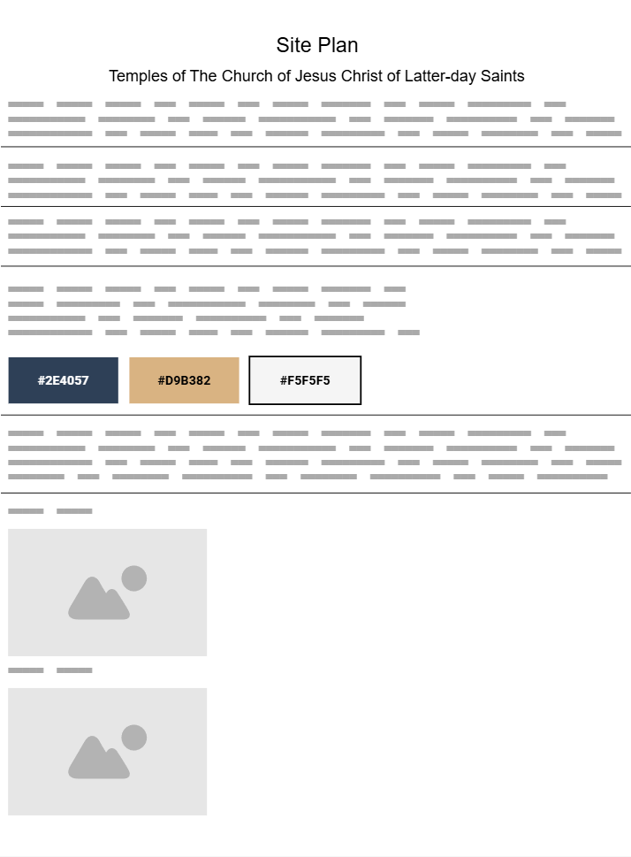
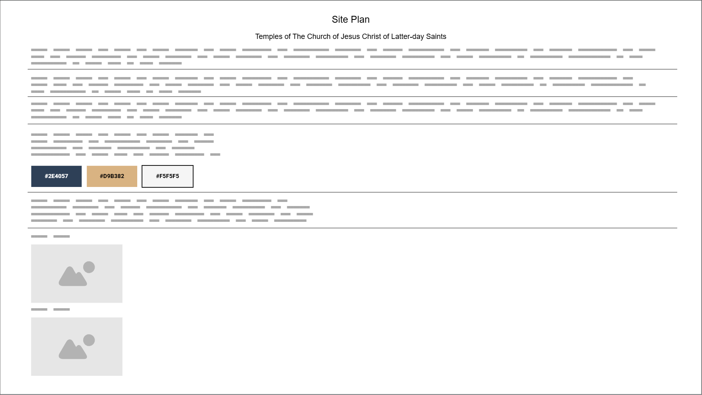

Name: Temple Pathways
This name reflects the sacred purpose and beauty of temples of The Church of Jesus Christ of Latter-day Saints around the world. It captures the idea of both physical and spiritual journeys associated with temples.
Optional domain availability: templepathways.org
Site Purpose
This site is designed to educate visitors about the significance, design, and global reach of temples belonging to The Church of Jesus Christ of Latter-day Saints. It will include images, brief histories, and facts about selected temples, as well as inspiration on why temples matter to church members. It will also include a form for users to submit their favorite temple experience.
Scenarios
- Which temples are located in my country or region?
- How can I learn more about the purpose of temples in the Church?
Color Schema
Primary Color: #2E4057 (Deep Blue) – Used for headers and navigation.
Accent Color: #D9B382 (Gold) – Used for highlights, buttons, and icons.
Background Color: #F5F5F5 (Light Gray) – Used for general background for readability.
Typography
Heading Font: 'Merriweather', serif – Used for titles and section headings to convey a classic, reverent tone.
Body Font: 'Open Sans', sans-serif – Used for easy-to-read paragraph and general content text.
Wireframes
Mobile View
Wireframe will show stacked layout with header, image banner, quick intro, and scrollable card grid for temples.
Desktop View
Wireframe will show a horizontal navigation bar, large hero image, grid layout of temple cards, and a footer with links and a contact form button.
